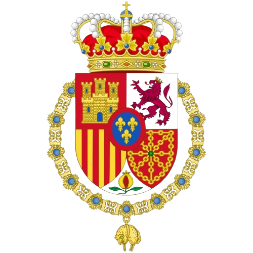
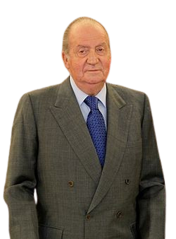
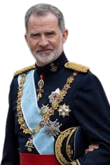

La fase actual de la Corona española, bajo el reinado de Felipe VI (desde 2014), se caracteriza por la renovación y modernización de la monarquía parlamentaria tras la abdicación de Juan Carlos I. Se enfoca en la transparencia, la ejemplaridad y la representación internacional de España por parte de la Familia Real.

Su reinado se inició con la solemne proclamación, por parte de las Cortes franquistas, el 22 de noviembre de 1975, dos días después de la muerte de Francisco Franco y de acuerdo con la Ley de Sucesión en la Jefatura del Estado de 1947 y la Ley de 22 de julio de 1969. La Constitución española, ratificada por referéndum popular el 6 de diciembre de 1978 y promulgada el 27 de diciembre del mismo año, reconoce su persona como rey de España y legítimo heredero de la dinastía histórica de Borbón, y le otorga la Jefatura del Estado.
Juan Carlos I, fue la figura clave en la transición de la dictadura franquista a una monarquía parlamentaria democrática. Proclamado tras la muerte de Franco, impulsó la democracia, desmanteló el régimen autoritario y frenó el golpe de estado de 1981, aunque terminó su reinado marcado por controversias y abdicó en 2014, convirtiéndose en Rey Emérito.
Juan Carlos I, fue una figura clave en la transición a la democracia tras la dictadura franquista, impulsando la Ley de Reforma Política y la Constitución de 1978. Aunque inicialmente designado por Franco, su papel fue crucial para instaurar una monarquía parlamentaria, a pesar de controversias finales y su posterior exilio.
Durante el intento de golpe de Estado del 23 de febrero de 1981, cuando el teniente coronel Antonio Tejero irrumpió en el Congreso, el Rey desempeñó un papel crucial. Su mensaje televisado ordenando a los militares respetar la Constitución fue decisivo para que el golpe fracasara y se consolidara la democracia en España

Nació en Madrid, durante la dictadura de Francisco Franco, siendo el tercer hijo y único varón del príncipe Juan Carlos de Borbón y la princesa Sofía de Grecia. Dos años después de la proclamación de su padre como rey, en 1977 se le concedió oficialmente el título de príncipe de Asturias, así como el resto de títulos que históricamente han pertenecido al heredero de la Corona, y fue formalmente proclamado como tal ante las Cortes en 1986, al cumplir la mayoría de edad.
Marcó el inicio de una nueva etapa para la monarquía española, en un contexto de crisis económica, desconfianza institucional y cuestionamientos hacia la Casa Real, Implementó normas internas más estrictas en la institución y promovió una monarquía más cercana a la ciudadanía. Además, ha defendido la unidad y el orden constitucional de España, especialmente durante la crisis independentista en Cataluña en 2017.
Su objetivo principal ha sido modernizar la institución y recuperar la confianza de los ciudadanos en un momento en que la Corona enfrentaba críticas y cuestionamientos, entre las acciones que reflejan esta renovación destacan la implementación de normas de transparencia económica en la Casa Real, la reducción del presupuesto institucional y un mayor control en la conducta pública de los miembros de la familia real.
Entre sus principales desafíos se encuentra el conflicto independentista en Cataluña en 2017, durante el intento de referéndum de independencia impulsado por el gobierno catalán, el rey emitió un discurso firme en defensa de la Constitución y la unidad del Estado. Este momento marcó uno de los episodios más delicados de su reinado, ya que generó tanto apoyo como críticas en distintos sectores de la sociedad.